全满药
喷雾式疗伤药。
获取：训练师之塔·商店 ／ 烟墨市·商店 ／ 石英高原·商店 ／ 吉野市·商店 ／ 桔梗市·商店 ／ 桧皮镇·商店 ／ 缘朱市·商店 ／ 浅葱市·商店 ／ …等 29 处
用途
喷雾式疗伤药。 回复1只宝可梦的所有HP。
标价 2500 口袋：道具
获取方式
购买
- 训练师之塔（区域179） · 标价 2500 · 地图｜静态图 · 触发条件待补
- 烟墨市（区域152） · 标价 2500 · 地图｜静态图 · 触发条件待补
- 石英高原（区域97） · 标价 2500 · 地图｜静态图 · 触发条件待补
- 吉野市（区域144） · 标价 2500 · 地图｜静态图 · 触发条件待补
- 桔梗市（区域145） · 标价 2500 · 地图｜静态图 · 触发条件待补
- 桧皮镇（区域146） · 标价 2500 · 地图｜静态图 · 触发条件待补
- 缘朱市（区域148） · 标价 2500 · 地图｜静态图 · 触发条件待补
- 浅葱市（区域149） · 标价 2500 · 地图｜静态图 · 触发条件待补
- 烟墨市（区域152） · 标价 2500 · 地图｜静态图 · 触发条件待补
- 石英高原（区域97） · 标价 2500 · 地图｜静态图 · 触发条件待补
- 吉野市（区域144） · 标价 2500 · 地图｜静态图 · 触发条件待补
- 桔梗市（区域145） · 标价 2500 · 地图｜静态图 · 触发条件待补
- 桧皮镇（区域146） · 标价 2500 · 地图｜静态图 · 触发条件待补
- 缘朱市（区域148） · 标价 2500 · 地图｜静态图 · 触发条件待补
- 浅葱市（区域149） · 标价 2500 · 地图｜静态图 · 触发条件待补
- 桧皮镇（区域146） · 标价 2500 · 地图｜静态图 · 触发条件待补
- 城都矿山（区域214） · 标价 2500 · 地图｜静态图 · 触发条件待补
- 满金市（区域147） · 标价 2500 · 地图｜静态图 · 触发条件待补
- 满金市（区域147） · 标价 2500 · 地图｜静态图 · 触发条件待补
地面隐藏
- 阿露福遗迹（区域134） · (20,14) · 数量 1 · 地图｜静态图
- 42号道路（区域167） · (60,17) · 数量 1 · 地图｜静态图
- 愤怒之湖（区域187） · (32,4) · 数量 1 · 地图｜静态图
- 冰天地（区域181） · (17,15) · 数量 1 · 地图｜静态图
- 龙穴（区域217） · (10,20) · 数量 1 · 地图｜静态图
人物剧情
- 野生原野区（区域136） · (13,12) · 与坐标处人物交互 · 数量 1 · 地图｜静态图 · 触发条件待补
- 野生原野区（区域136） · (16,27) · 与坐标处人物交互 · 数量 1 · 地图｜静态图 · 触发条件待补
- 呆呆兽之井（区域127） · (7,27) · 与坐标处人物交互 · 数量 1 · 地图｜静态图 · 触发条件待补
- 铃铛塔（区域135） · (9,19) · 与坐标处人物交互 · 数量 1 · 地图｜静态图 · 触发条件待补 · 相同来源 2 条
- 烧焦塔（区域183） · (9,11) · 与坐标处人物交互 · 数量 1 · 地图｜静态图 · 触发条件待补 · 相同来源 2 条
- 36号道路（区域161） · (12,11) · 与坐标处人物交互 · 数量 1 · 地图｜静态图 · 触发条件待补
- 擂钵山（区域99） · (15,9) · 与坐标处人物交互 · 数量 1 · 地图｜静态图 · 触发条件待补
- 满金市（区域147） · (12,20) · 与坐标处人物交互 · 数量 1 · 地图｜静态图 · 触发条件待补
- 铃铛塔（区域135） · (9,13) · 与坐标处人物交互 · 数量 1 · 地图｜静态图 · 触发条件待补
- 38号道路（区域163） · (52,25) · 与坐标处人物交互 · 数量 1 · 地图｜静态图 · 触发条件待补
- 擂钵山（区域99） · (34,30) · 与坐标处人物交互 · 数量 1 · 地图｜静态图 · 触发条件待补
- 擂钵山（区域99） · (42,24) · 与坐标处人物交互 · 数量 1 · 地图｜静态图 · 触发条件待补
- 45号道路（区域170） · (17,82) · 与坐标处人物交互 · 数量 1 · 地图｜静态图 · 触发条件待补
- 冰天地（区域181） · (3,11) · 与坐标处人物交互 · 数量 1 · 地图｜静态图 · 触发条件待补
数据来源
- 来源文档：out/items.json（
/20） - 表索引 index 0020；内嵌 itemId 20；口袋 ITEMS (id=1)；type 1；hold_effect 0/255；importance 0；unk19 0
- 获取来源文档：encounters_research/out/shops.json、maps_research/out/events/events.json、maps_research/out/scripts/scripts.json
- 获取记录 ID：
shop:081649A8:3:2:10、shop:089C7965:6:31:2、shop:089C7965:6:34:3、shop:089C7965:6:45:1、shop:089C7965:6:46:3、shop:089C7965:6:47:4、shop:089C7965:6:48:7、shop:089C7965:6:49:11、shop:089C7970:6:31:2、shop:089C7970:6:34:3、shop:089C7970:6:45:1、shop:089C7970:6:46:3、shop:089C7970:6:47:4、shop:089C7970:6:48:7、shop:089C7970:6:49:11、shop:08171CC4:2:35:7、shop:08171E7C:2:37:4、shop:089EB937:6:50:16、shop:089EB942:6:50:16、hidden:1:55:0、hidden:3:97:8、hidden:3:100:6、hidden:53:4:0、hidden:54:2:2、script_item_candidate:std:081BE7EE:1:64、script_item_candidate:std:081BE856:1:66、script_item_candidate:std:081BE926:1:95、script_item_candidate:std:081BE98E:1:61、script_item_candidate:std:081BE98E:48:4、script_item_candidate:std:081BEC73:3:56、script_item_candidate:std:087B0DB3:1:111、script_item_candidate:std:087BC9CF:56:78、script_item_candidate:std:087BD8EE:55:22、script_item_candidate:std:089F1E81:3:91、script_item_candidate:std:08D537EF:55:9、script_item_candidate:std:08D54F42:55:10、script_item_candidate:std:08F4E39D:3:101、script_item_candidate:std:08F4EDA5:53:6 - 说明文字解码来源：
reference/SAVE_HOME_GAME_DATA.json.charmap
地点地图
共享RGB底图；点击可缩放定位。数字对应本页相关地点，不代表地图上全部事件。


展开其余 24 张地点地图
缘朱市

1 全满药（1,5）
浅葱市

1 全满药（1,5）
桧皮镇
1 全满药（2,3）
城都矿山
1 全满药（10,5）
满金市
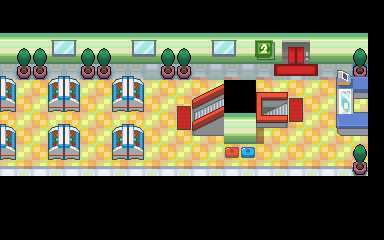
1 全满药（22,6）
阿露福遗迹
1 全满药（20,14）
42号道路


1 全满药（60,17）
愤怒之湖

1 全满药（32,4）
冰天地

1 全满药（17,15）
龙穴
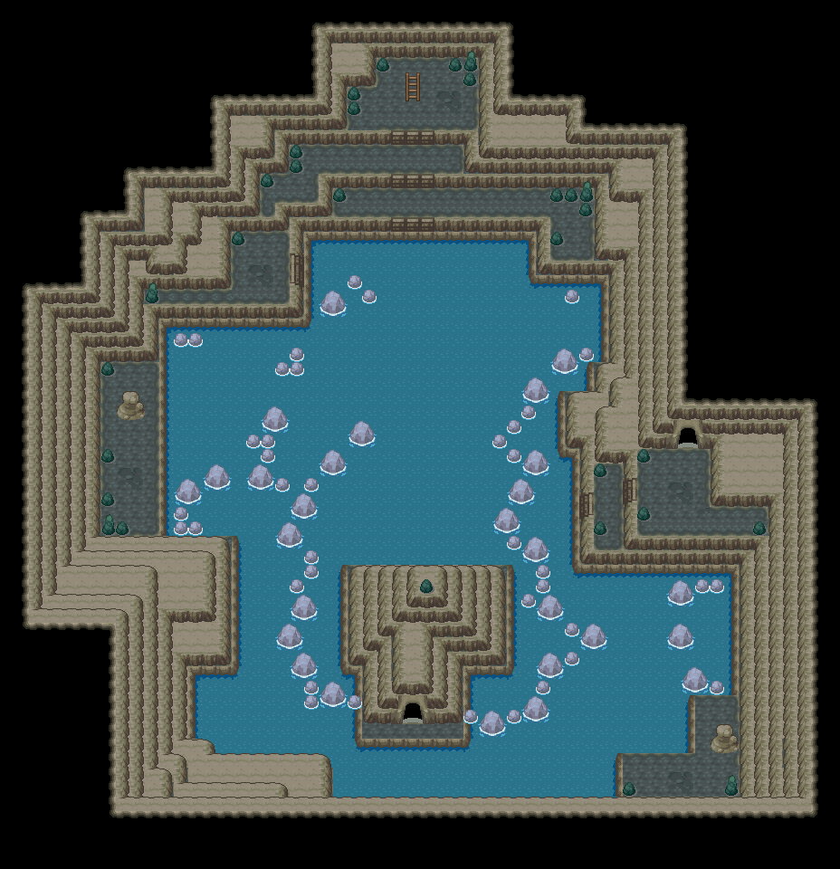
1 全满药（10,20）
野生原野区
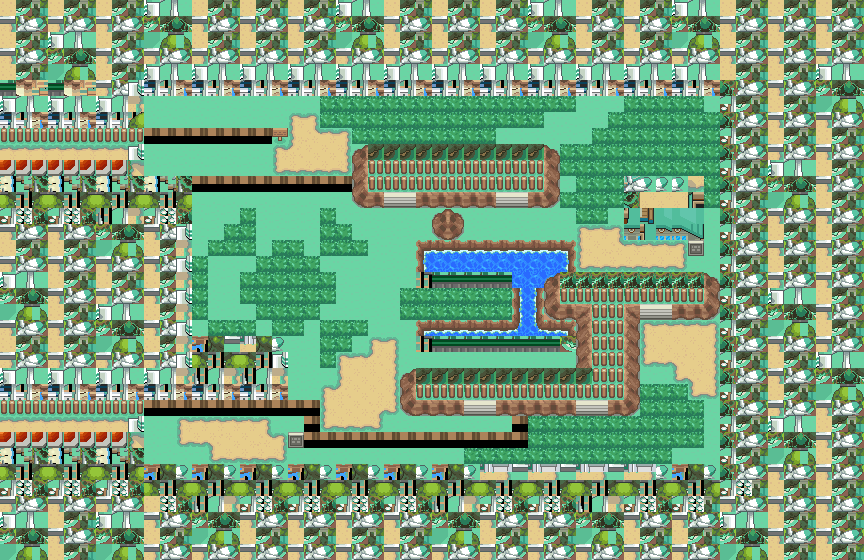
1 全满药（13,12） 底图有1个图块缺少原始数据。
野生原野区
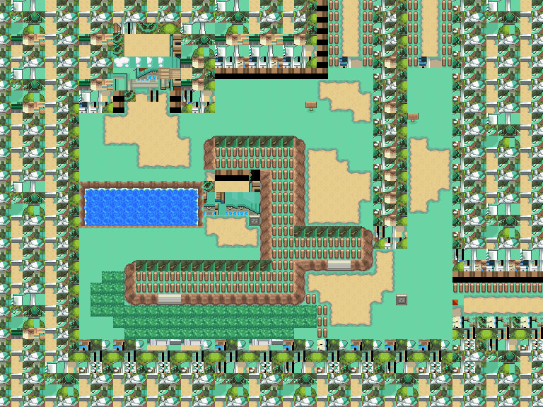
1 全满药（16,27） 底图有1个图块缺少原始数据。
呆呆兽之井
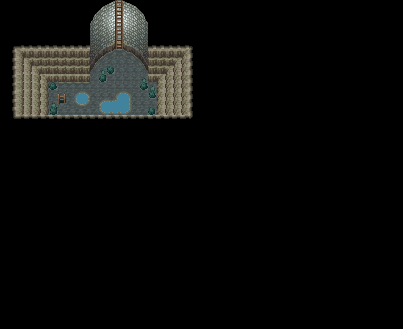
1 全满药（7,27）
铃铛塔
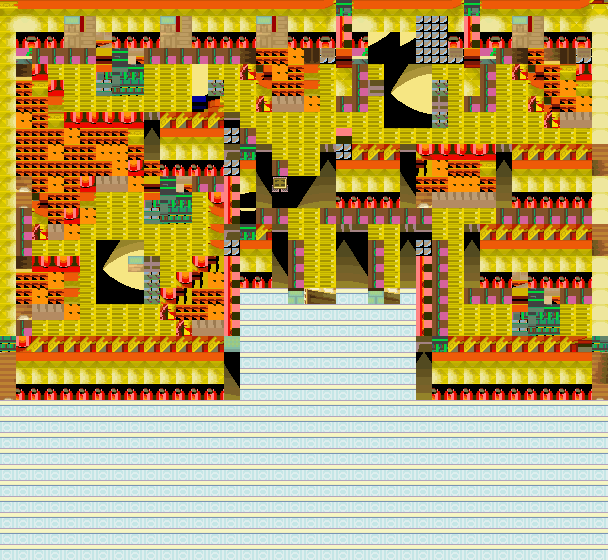
1 全满药（9,19）
烧焦塔

1 全满药（9,11） 底图有4个图块缺少原始数据。
36号道路 · 五之岛旧布局
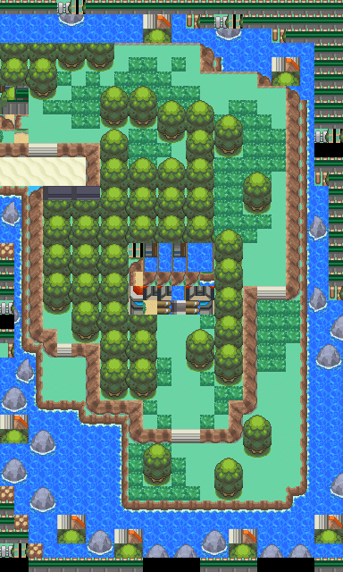
1 全满药（12,11）
本图保留原FiveIsland_Meadow布局，当前图块资源与旧布局不匹配；地区段名称被改为36号道路，不能将它当作当前城都36号道路。
擂钵山
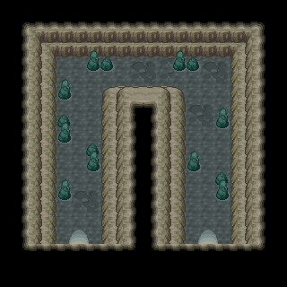
1 全满药（15,9）
满金市
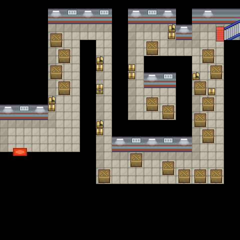
1 全满药（12,20） 底图有19个图块缺少原始数据。
铃铛塔
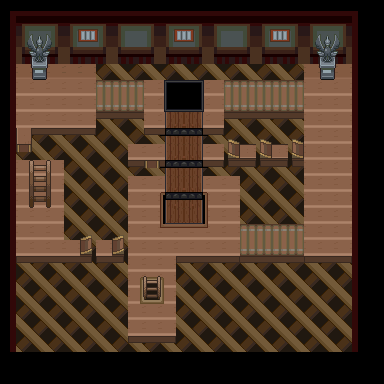
1 全满药（9,13）
38号道路


1 全满药（52,25）
擂钵山

1 全满药（34,30）
擂钵山
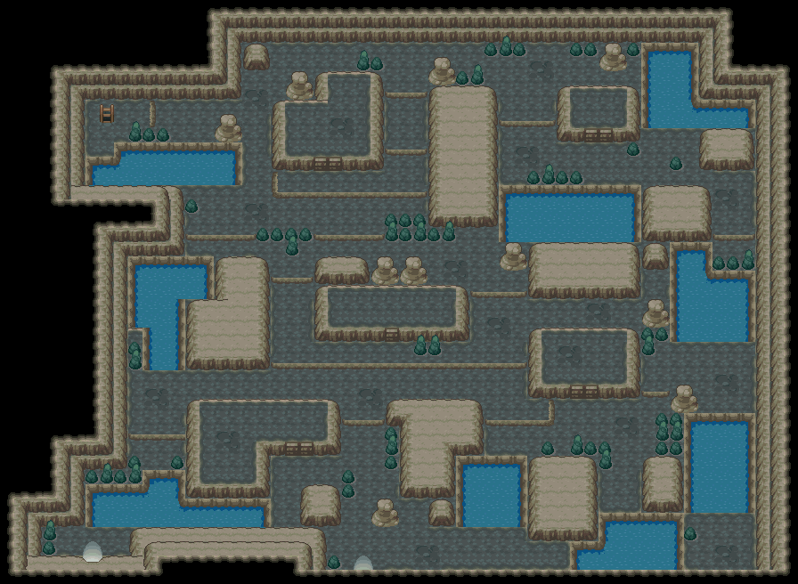
1 全满药（42,24）
45号道路


1 全满药（17,82）
冰天地
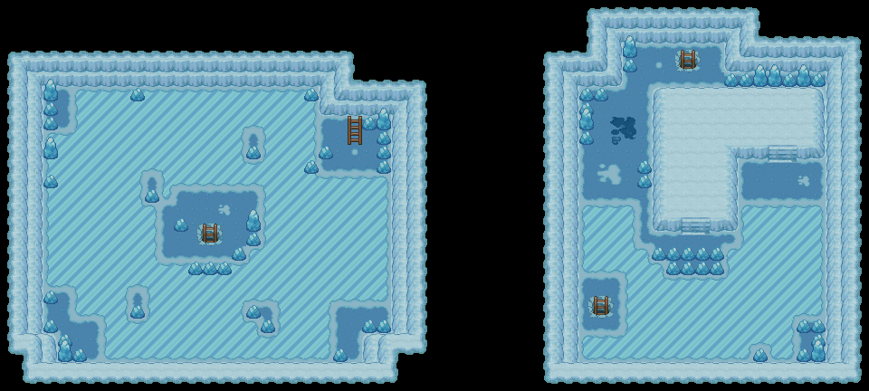
1 全满药（3,11）